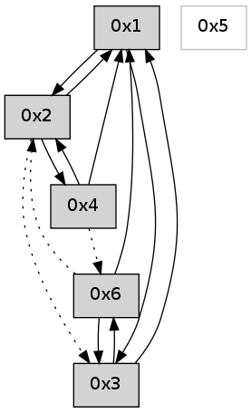

>> << IDX [start] -100 -25 -5 +0 +5 +25 +100 [620.205918074]
 Previous packets
----------------------------------------------------------------------
615.284834 beacon01(adaf) #0 coord=01,02,05,03,04,06 cycle=432.0ms assoc
-- color-indic=0 64 7f 13
615.294795 beacon02(adaf) #0 coord=01,02,05,03,04,06 cycle=432.0ms assoc 64 2e ec
615.304794 beacon05(adaf) #0 coord=01,02,05,03,04,06 cycle=432.0ms assoc 64 88 c6
615.314794 beacon03(adaf) #0 coord=01,02,05,03,04,06 cycle=432.0ms assoc 64 14 e2
615.324796 beacon04(adaf) #0 coord=01,02,05,03,04,06 cycle=432.0ms assoc 64 b2 c8
615.334796 beacon06(adaf) #0 coord=01,02,05,03,04,06 cycle=432.0ms assoc 64 c6 d4
615.346492 [Hello(4): seq=416 sym=1,2 asym=6 sysInfo= stat=1:14,0,0,0/2:11,0,0,0/6:5,0,0,0]
615.350173 [Hello(1): seq=315 sym=2,4 sysInfo= stat=2:7,0,0,0/4:8,0,0,0]
----------------------------------------------------------------------
615.776943 beacon01(adaf) #0 coord=01,02,05,03,04,06 cycle=432.0ms assoc
-- color-indic=0 64 bb 7c
615.786903 beacon02(adaf) #0 coord=01,02,05,03,04,06 cycle=432.0ms assoc 64 ea 83
615.796904 beacon05(adaf) #0 coord=01,02,05,03,04,06 cycle=432.0ms assoc 64 4c a9
615.806905 beacon03(adaf) #0 coord=01,02,05,03,04,06 cycle=432.0ms assoc 64 d0 8d
615.816904 beacon04(adaf) #0 coord=01,02,05,03,04,06 cycle=432.0ms assoc 64 76 a7
615.826906 beacon06(adaf) #0 coord=01,02,05,03,04,06 cycle=432.0ms assoc 64 02 bb
615.838603 [Hello(2): seq=911 sym=4,1 asym=3 sysInfo= stat=4:0,0,0,0/1:15,0,0,0/3:10,0,0,0]
----------------------------------------------------------------------
616.269052 beacon01(adaf) #0 coord=01,02,05,03,04,06 cycle=432.0ms assoc
-- color-indic=0 64 35 69
616.279012 beacon02(adaf) #0 coord=01,02,05,03,04,06 cycle=432.0ms assoc 64 64 96
616.289012 beacon05(adaf) #0 coord=01,02,05,03,04,06 cycle=432.0ms assoc 64 c2 bc
616.299013 beacon03(adaf) #0 coord=01,02,05,03,04,06 cycle=432.0ms assoc 64 5e 98
616.309013 beacon04(adaf) #0 coord=01,02,05,03,04,06 cycle=432.0ms assoc 64 f8 b2
616.319015 beacon06(adaf) #0 coord=01,02,05,03,04,06 cycle=432.0ms assoc 64 8c ae
616.330708 [Hello(4): seq=417 sym=1,2 asym=6 sysInfo= stat=1:15,0,0,0/2:12,0,0,0/6:5,0,0,0]
616.332805 [Hello(1): seq=316 sym=2,4 sysInfo= stat=2:8,0,0,0/4:8,0,0,0]
----------------------------------------------------------------------
616.761159 beacon01(adaf) #0 coord=01,02,05,03,04,06 cycle=432.0ms assoc
-- color-indic=0 64 f1 06
616.771121 beacon02(adaf) #0 coord=01,02,05,03,04,06 cycle=432.0ms assoc 64 a0 f9
616.781121 beacon05(adaf) #0 coord=01,02,05,03,04,06 cycle=432.0ms assoc 64 06 d3
616.791120 beacon03(adaf) #0 coord=01,02,05,03,04,06 cycle=432.0ms assoc 64 9a f7
616.801123 beacon04(adaf) #0 coord=01,02,05,03,04,06 cycle=432.0ms assoc 64 3c dd
616.811122 beacon06(adaf) #0 coord=01,02,05,03,04,06 cycle=432.0ms assoc 64 48 c1
616.822812 [Hello(2): seq=912 sym=4,1 asym=3 sysInfo= stat=4:0,0,0,0/1:0,0,0,0/3:11,0,0,0]
----------------------------------------------------------------------
617.253268 beacon01(adaf) #0 coord=01,02,05,03,04,06 cycle=432.0ms assoc
-- color-indic=0 64 bd b6
617.263228 beacon02(adaf) #0 coord=01,02,05,03,04,06 cycle=432.0ms assoc 64 ec 49
617.273229 beacon05(adaf) #0 coord=01,02,05,03,04,06 cycle=432.0ms assoc 64 4a 63
617.283229 beacon03(adaf) #0 coord=01,02,05,03,04,06 cycle=432.0ms assoc 64 d6 47
617.293231 beacon04(adaf) #0 coord=01,02,05,03,04,06 cycle=432.0ms assoc 64 70 6d
617.303230 beacon06(adaf) #0 coord=01,02,05,03,04,06 cycle=432.0ms assoc 64 04 71
617.314648 [Hello(1): seq=317 sym=2,4 sysInfo= stat=2:9,0,0,0/4:8,0,0,0]
617.318553 [Hello(4): seq=418 sym=1,2 sysInfo= stat=1:0,0,0,0/2:13,0,0,0]
----------------------------------------------------------------------
617.745376 beacon01(adaf) #0 coord=01,02,05,03,04,06 cycle=432.0ms assoc
-- color-indic=0 64 79 d9
617.755337 beacon02(adaf) #0 coord=01,02,05,03,04,06 cycle=432.0ms assoc 64 28 26
617.765337 beacon05(adaf) #0 coord=01,02,05,03,04,06 cycle=432.0ms assoc 64 8e 0c
617.775339 beacon03(adaf) #0 coord=01,02,05,03,04,06 cycle=432.0ms assoc 64 12 28
617.785339 beacon04(adaf) #0 coord=01,02,05,03,04,06 cycle=432.0ms assoc 64 b4 02
617.795338 beacon06(adaf) #0 coord=01,02,05,03,04,06 cycle=432.0ms assoc 64 c0 1e
617.807046 PARSE ERROR************************
Traceback (most recent call last):
File "PacketAnalysis.py", line 167, in showOperaPacket
structPacket = OperaPacketParse.parsePacket(rawPacket)
File "../../pkg-python/HipSens/Core/OperaPacketParse.py", line 461, in parsePacket
return parseHelloMessage(data)
File "../../pkg-python/HipSens/Core/OperaPacketParse.py", line 127, in parseHelloMessage
assert struct.calcsize("H")*len(neighAddrList) == len(linkList)
AssertionError
48 1a 02 00 03 91 00 02 02 02 01 00 01 02 03 00 53 04 00 00 00 00 4c 04 00 01 00 0c 4c ad
----------------------------------------------------------------------
618.237484 beacon01(adaf) #0 coord=01,02,05,03,04,06 cycle=432.0ms assoc
-- color-indic=0 64 34 de
618.247444 beacon02(adaf) #0 coord=01,02,05,03,04,06 cycle=432.0ms assoc 64 65 21
618.257446 beacon05(adaf) #0 coord=01,02,05,03,04,06 cycle=432.0ms assoc 64 c3 0b
618.267447 beacon03(adaf) #0 coord=01,02,05,03,04,06 cycle=432.0ms assoc 64 5f 2f
618.277445 beacon04(adaf) #0 coord=01,02,05,03,04,06 cycle=432.0ms assoc 64 f9 05
618.287446 beacon06(adaf) #0 coord=01,02,05,03,04,06 cycle=432.0ms assoc 64 8d 19
618.298546 [Hello(1): seq=318 sym=2,3 sysInfo= stat=2:10,0,0,0/3:0,0,0,0]
618.302757 [Hello(4): seq=419 sym=1,2 sysInfo= stat=1:0,0,0,0/2:14,0,0,0]
----------------------------------------------------------------------
618.729593 beacon01(adaf) #0 coord=01,02,05,03,04,06 cycle=432.0ms assoc
-- color-indic=0 64 f0 b1
618.739556 beacon02(adaf) #0 coord=01,02,05,03,04,06 cycle=432.0ms assoc 64 a1 4e
618.749555 beacon05(adaf) #0 coord=01,02,05,03,04,06 cycle=432.0ms assoc 64 07 64
618.759554 beacon03(adaf) #0 coord=01,02,05,03,04,06 cycle=432.0ms assoc 64 9b 40
618.769554 beacon04(adaf) #0 coord=01,02,05,03,04,06 cycle=432.0ms assoc 64 3d 6a
618.779556 beacon06(adaf) #0 coord=01,02,05,03,04,06 cycle=432.0ms assoc 64 49 76
618.791237 [Hello(2): seq=914 sym=1 asym=3 sysInfo= stat=1:2,0,0,0/3:13,0,0,0]
----------------------------------------------------------------------
619.221701 beacon01(adaf) #0 coord=01,02,05,03,04,06 cycle=432.0ms assoc
-- color-indic=0 64 bc 01
619.231663 beacon02(adaf) #0 coord=01,02,05,03,04,06 cycle=432.0ms assoc 64 ed fe
619.241661 beacon05(adaf) #0 coord=01,02,05,03,04,06 cycle=432.0ms assoc 64 4b d4
619.251662 beacon03(adaf) #0 coord=01,02,05,03,04,06 cycle=432.0ms assoc 64 d7 f0
619.261663 beacon04(adaf) #0 coord=01,02,05,03,04,06 cycle=432.0ms assoc 64 71 da
619.271663 beacon06(adaf) #0 coord=01,02,05,03,04,06 cycle=432.0ms assoc 64 05 c6
619.283305 [Hello(3): seq=419 sym=1,6 sysInfo= stat=1:2,0,0,0/6:11,0,0,0]
619.286401 [Hello(1): seq=319 sym=2,3 sysInfo= stat=2:11,0,0,0/3:1,0,0,0]
619.288755 [Hello(4): seq=420 sym=1,2 asym=6 sysInfo= stat=1:0,0,0,0/2:14,0,0,0/6:0,0,0,0]
----------------------------------------------------------------------
619.713810 beacon01(adaf) #0 coord=01,02,05,03,04,06 cycle=432.0ms assoc
-- color-indic=0 64 78 6e
619.723770 beacon02(adaf) #0 coord=01,02,05,03,04,06 cycle=432.0ms assoc 64 29 91
619.733771 beacon05(adaf) #0 coord=01,02,05,03,04,06 cycle=432.0ms assoc 64 8f bb
619.743771 beacon03(adaf) #0 coord=01,02,05,03,04,06 cycle=432.0ms assoc 64 13 9f
619.753772 beacon04(adaf) #0 coord=01,02,05,03,04,06 cycle=432.0ms assoc 64 b5 b5
619.763771 beacon06(adaf) #0 coord=01,02,05,03,04,06 cycle=432.0ms assoc 64 c1 a9
619.775454 [Hello(2): seq=915 sym=4,1 asym=3 sysInfo= stat=4:0,0,0,0/1:3,0,0,0/3:14,0,0,0]